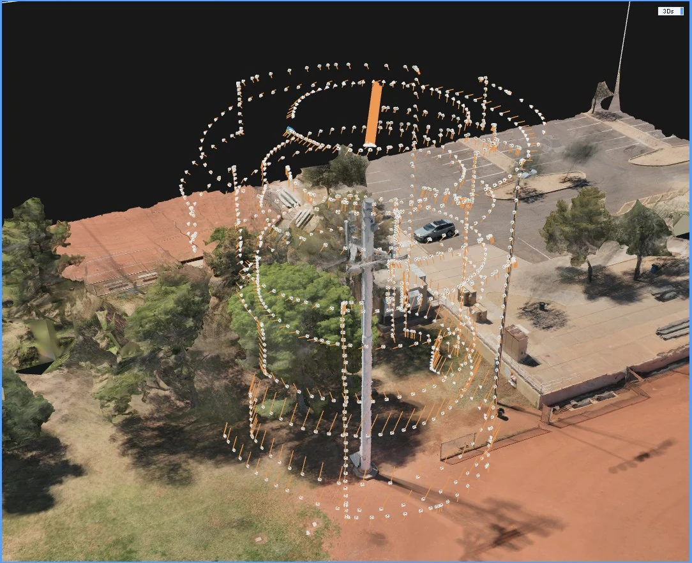

Drone mapping & site documentation · Metro Phoenix, Arizona
A digital twin of your site, at the accuracy your project actually needs.
We fly your site and hand back something you can use: a dated record of a build, aerial imagery for a listing, or measurable maps for planning. Based in Buckeye, working across Metro Phoenix and Arizona.

What we do
Four things people hire us for.

Construction documentation
A dated record of the site each visit, for owners, contractors and the people funding it.

Property & land imagery
What the parcel is, where the access sits, and what surrounds it, in one frame.


Infrastructure & assets
Bridges, towers and facilities recorded in 3D without taking anything out of service.
Settled before anything is flown.
Scope, access and airspace settled before the flight. Files in the formats your team already opens. A plain statement of what was captured and what was not.